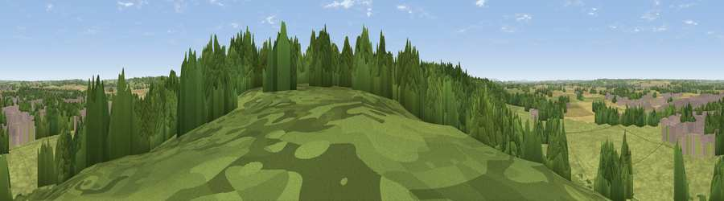

Viewpoint near Wellesbourne
#30041 in England · top 62% of its area beats it · near WellesbourneThe view, rendered

A 360° render of this exact spot computed from the terrain model, tree cover and land cover — summer colours, afternoon light, calibrated against photographs of famous viewpoints. Real trees, hedges and buildings will differ in detail.
The panorama
Grey silhouette: terrain skyline in each direction (720 bearings, Earth curvature and refraction included). Dashed green: skyline with trees (+15 m) and buildings (+8 m) as obstacles. Blue strip: how far the ground is visible on each bearing.
Where the view opens
Wedge length = distance to the farthest visible ground on that bearing (vegetation-aware). Rings at 10, 25 and 50 km.
What fills the view
43% grassland · 32% woodland · 14% cropland · 11% built-up
Angular shares of the visible panorama (visual magnitude), not map area. Landscape diversity 0.54 (0–1 Shannon).
Key numbers
More beautiful places nearby
The staircase of upgrades: each row has a higher view potential than everything closer. Driving times are estimates from straight-line distance, calibrated against real road routing — check an actual route before setting out.
| Place | Direction | Drive | Score |
|---|---|---|---|
| Viewpoint near Ettington | SW · 3 km | ~7 min | 60.1 |
| Viewpoint near Radway | SE · 12 km | ~22 min | 70.5 |
| Viewpoint near Radway | ESE · 12 km | ~23 min | 71.7 |
| Viewpoint near Meon Vale | SW · 13 km | ~23 min | 77.0 |
| Broadway Hill | SW · 24 km | ~39 min | 77.7 |
| Viewpoint near Elmley Castle | WSW · 33 km | ~50 min | 80.5 |
| Bredon Hill | WSW · 34 km | ~52 min | 83.0 |
| North Hill | W · 51 km | ~72 min | 86.8 |
52.18066, -1.60471 · source: screening · position refined by local search. Computed location — check access rights before visiting.